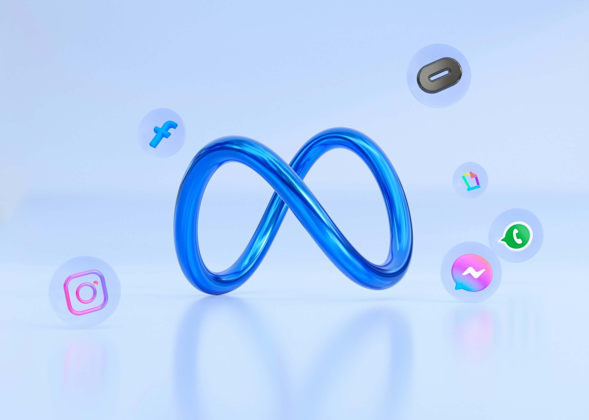

We create and manage content strategies that grow your following, boost engagement, and convert your audience into loyal customers across Instagram, Facebook, TikTok, and LinkedIn.
Average increase in engagement
Followers managed monthly
Posts created each month
Your customers are on social media. They spend 3+ hours daily scrolling. If you're not there, your competition is capturing their attention.
Create a loyal tribe of followers who trust you and buy regularly.
Content that generates real conversations. Not just "likes" - genuine connections.
Real metrics tracking: followers, engagement rate, clicks, sales.
Increase your brand visibility. Everyone will know your business.

Strategic calendar aligned with your business objectives and audience.
Building authentic relationships with your audience in real-time.
Professional production of photography, video, and design that captures attention.
Consistency and planning to maximize reach at optimal times.
Strategic collaborations with influencers to amplify your reach.
Clear metrics and data-driven recommendations to optimize results.
Posts, events, groups
Feed, Stories, Reels
Viral videos and trends
B2B and thought leadership
Long-form videos
Conversations and news
Get a personalized social media strategy